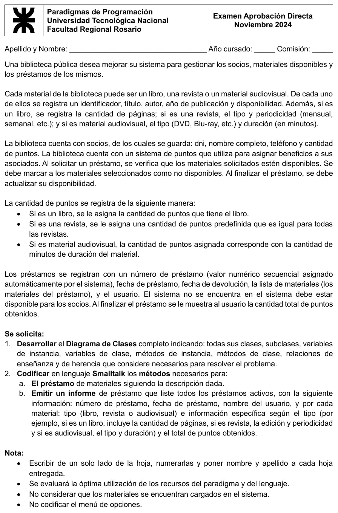

Aprobación directa, 07/11/2024 (Biblioteca)
Aprobación directa, 07/11/2024
Enunciado


Propuesta de respuesta
Respuesta no verificada. La propuso Luta Studios con inteligencia artificial y ningún docente la revisó. Puede tener errores.
1) Diagrama de clases
Los tres materiales tienen datos propios y dan puntos de forma distinta, así que son subclases. Los puntos de las revistas son iguales para todas, y van como variable de clase. El libro da sus páginas y el audiovisual, sus minutos. Para que no choque con el método tipo, el tipo de la revista se llama edicion y el del audiovisual, formato. Cada caja tiene arriba las variables de clase (vc) y de instancia (vi), y abajo los métodos de clase (mc) y de instancia (mi), como los diagramas de los cuestionarios del campus. La flecha punteada va de la subclase a la superclase, y la línea con cantidad es un ensamble. Los métodos que solo devuelven una variable no van en las cajas, para que se lean. Están al final del código. Tocá el dibujo para verlo en pantalla completa.
2a) El préstamo de materiales
Biblioteca es la clase principal y guarda las colecciones, como la clase principal de los ejercicios resueltos. Cada material elegido tiene que estar disponible y queda no disponible. Al final se suman los puntos al socio y se le muestran.
"Biblioteca, métodos de instancia"
#inicializa
materiales := OrderedCollection new.
socios := OrderedCollection new.
prestamos := OrderedCollection new.
#registrarPrestamo
| soc prest mat seguir |
soc := self buscarOCrearSocio.
prest := Prestamo new.
prest inicializa.
prest cargaDatos: soc.
seguir := true.
[seguir] whileTrue: [
mat := self buscarMaterial.
mat isNil
ifTrue: [MessageBox notify: 'No hay un material disponible con ese identificador']
ifFalse: [
mat prestar.
prest agregar: mat].
seguir := MessageBox confirm: '¿Desea agregar otro material?'].
prest materiales isEmpty
ifTrue: [MessageBox notify: 'El préstamo no tiene materiales y no se registró']
ifFalse: [
prest cargaDevolucion.
prestamos add: prest.
soc sumarPuntos: prest puntos.
MessageBox notify: 'Puntos obtenidos: ', prest puntos printString]
#buscarOCrearSocio
| dni soc |
dni := (Prompter prompt: 'Ingrese el DNI del socio') asNumber.
soc := socios detect: [:unSocio | unSocio dni = dni] ifNone: [nil].
soc isNil ifTrue: [soc := self nuevoSocio: dni].
^soc
#nuevoSocio: unDni
| soc |
soc := Socio new.
soc cargaDatos: unDni.
socios add: soc.
^soc
#buscarMaterial
| id |
id := (Prompter prompt: 'Ingrese el identificador del material') asNumber.
^materiales detect: [:unMat | unMat identificador = id and: [unMat estaDisponible]] ifNone: [nil]
"Socio, métodos de instancia"
#cargaDatos: unDni
dni := unDni.
nombreCompleto := Prompter prompt: 'Ingrese el nombre completo'.
telefono := Prompter prompt: 'Ingrese el teléfono'.
puntos := 0.
#sumarPuntos: unosPuntos
puntos := puntos + unosPuntos
"Prestamo, métodos de clase"
#asignaUltimoNumero: unNumero
UltimoNumero := unNumero
#incrementaUltimoNumero
UltimoNumero := UltimoNumero + 1
"Prestamo, métodos de instancia"
#inicializa
materiales := OrderedCollection new.
#cargaDatos: unSocio
Prestamo incrementaUltimoNumero.
numero := UltimoNumero.
fechaPrestamo := Date today.
socio := unSocio.
#cargaDevolucion
fechaDevolucion := Date fromString: (Prompter prompt: 'Ingrese la fecha de devolución (dd/mm/aaaa)').
#agregar: unMaterial
materiales add: unMaterial
#puntos
| tot |
tot := 0.
materiales do: [:unMat | tot := tot + unMat puntos].
^tot
"Material, métodos de instancia"
#estaDisponible
^disponible
#prestar
disponible := false
"Libro, métodos de instancia"
#puntos
^paginas
"Revista, métodos de clase"
#asignaPuntos: unosPuntos
Puntos := unosPuntos
"Revista, métodos de instancia"
#puntos
^Puntos
"Audiovisual, métodos de instancia"
#puntos
^duracion2b) Informe de préstamos activos
Un préstamo está activo si su fecha de devolución todavía no pasó. Cada material muestra su tipo y su información propia, sin que el informe pregunte de qué clase es.
"Biblioteca, métodos de instancia"
#informarPrestamosActivos
| lista |
lista := prestamos select: [:unPrest | unPrest estaActivo].
lista isEmpty
ifTrue: [MessageBox notify: 'No hay préstamos activos']
ifFalse: [
Transcript clear; show: 'Préstamos activos'; cr.
lista do: [:unPrest | unPrest mostrarEnInforme]]
"Prestamo, métodos de instancia"
#estaActivo
^fechaDevolucion >= Date today
#mostrarEnInforme
Transcript show: 'Préstamo Nro. ', numero printString; tab;
show: fechaPrestamo printString; tab;
show: socio nombreCompleto; cr.
materiales do: [:unMat | unMat mostrarDetalle].
Transcript show: 'Total de puntos: ', self puntos printString; cr
"Libro, métodos de instancia"
#mostrarDetalle
Transcript tab; show: 'Libro'; tab;
show: 'Páginas: ', paginas printString; cr
"Revista, métodos de instancia"
#mostrarDetalle
Transcript tab; show: 'Revista'; tab;
show: 'Edición: ', edicion; tab;
show: 'Periodicidad: ', periodicidad; cr
"Audiovisual, métodos de instancia"
#mostrarDetalle
Transcript tab; show: 'Audiovisual'; tab;
show: 'Tipo: ', formato; tab;
show: 'Duración: ', duracion printString, ' minutos'; crMétodos que devuelven datos
"Socio, métodos de instancia"
#dni
^dni
#nombreCompleto
^nombreCompleto
"Prestamo, métodos de instancia"
#materiales
^materiales
"Material, métodos de instancia"
#identificador
^identificadorRespuesta no verificada. Puede tener errores.
Se armó con las páginas de Aprobación directa («Cómo leer la narrativa» y «Qué lleva el diagrama») y de Final («Las plantillas del Drive» y «Cómo se arma el programa»), que salen de «Estructuras útiles en Smalltalk» y de los Ejercicios resueltos 1 a 3 de Material Util.
Quedó en duda: La hoja tiene erratas, avisadas en Aprobación directa. Dice «relaciones de enseñanza» por ensamble y trae una frase rota sobre el sistema y los socios. Acá se leyó como «si el socio no está en el sistema, se da de alta». La nota «No considerar que los materiales se encuentran cargados» se contradice con que la consigna no pide darlos de alta. Acá se supone que ya están cargados. «Activo» se tomó como un préstamo con la fecha de devolución de hoy en adelante. La hoja no pide registrar la devolución, y por eso ningún material vuelve a estar disponible. Para la revista, la hoja dice «tipo» en los datos y «edición» en el informe. Acá es una sola variable, edicion. El total de puntos se muestra por préstamo. Se supone que las variables de clase ya tienen su valor, cargado con los métodos de clase asigna.... El código no se corrió en un Smalltalk real.
¿Cómo te fue?
Marcá cada tema del examen.
- Diagrama de clasesMétodos de clase y de instancia, en Parcial de regularización
- SmalltalkQué se tomó, en Parcial de regularización